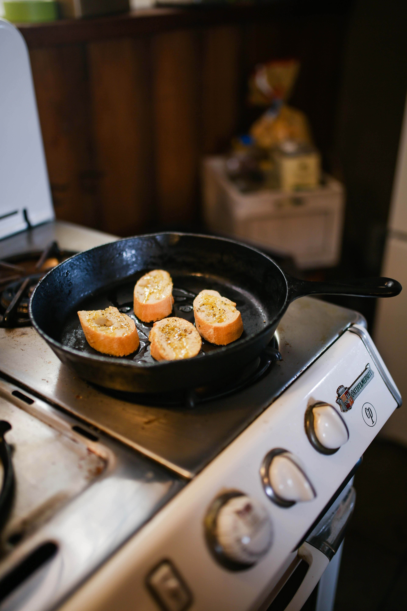

Pro Tips
If we're gonna start cookin up a storm let's make it count! Here you will find different protips that can help you around the kitchen. There is no better way than learning simple techniques to make our lives easier. Enjoy!
Skillet Bread
Don't let making bread be dough, I mean tough. Let's help you by looking at Skillet Bread. Yum! all the carbs!

Filleting Salmon
Let's fillet that delicous salmon for our bagels! The trick is to lay the salmon down and use a knife along the back bone.

Slicing Vegtables
It does not matter what vegtable you are looking to slice, what matters is that you cut them into a managable size first.

Stir Fry
The key is to ensure you have turned your heat on and your pan is hot prior to placing your vegtables in.